LEAI · Instructor Documentation
LEAI Instructor Guide
A step-by-step manual for creating surveys, reviewing student feedback, and understanding what your students see — no technical background required.
Contents
Quick Start
If you want to run a feedback session today, follow these five steps. The rest of this guide covers each step in detail.
Open the Prompt Designer page and enter your course ID and password. This is where you will create and manage all your surveys.
Open Prompt Designer →
Click one of the template buttons — Weekly Check-in is a good starting point. Give it a label (e.g. "Week 3 Check-in") and click Create Survey & Get Link.
Open Prompt Designer →
Your new survey appears in the list on the right. Click Copy next to its link, then paste it into Canvas, a class slide, or an email. Students do not need an account — they just open the link.
Open Prompt Designer →
Students open the link on any device — phone, tablet, or laptop. They have a short conversation with the AI (typically 5–10 minutes). No login, no app, no account required. When the class period ends, go back to the Prompt Designer and click Close on the survey to stop new responses.
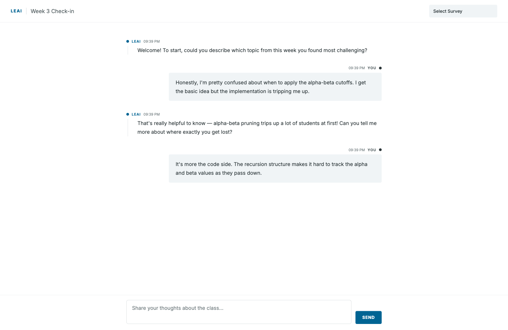
Open the Feedback Analyzer page and log in with the same course ID and password. Click View next to your survey to read student conversations. Use the CSV button to download a spreadsheet of all responses.
Open Feedback Analyzer →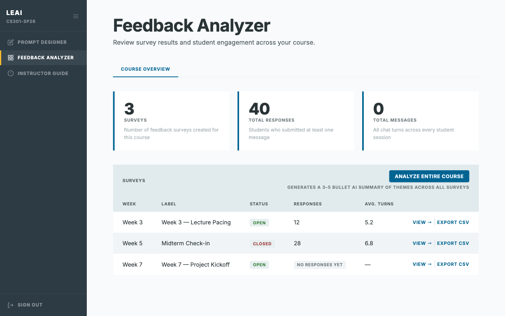
What is LEAI?
LEAI (Learning Experience AI) is a set of tools that lets you collect richer feedback from your students using AI-powered conversations. Instead of a static form, students have a short dialogue with an AI — it gently asks follow-up questions and encourages reflection. You then review the results in a dashboard.
No AI expertise needed. You don't need to know how AI works to use these tools. Think of it like setting up a Google Form, except the form can ask follow-up questions on your behalf.
The Two Tools
LEAI has two pages you will use as an instructor:
Where you create and manage feedback surveys. Set the topic, choose settings, and share a link with students.
Where you see student responses. View conversation summaries, participation counts, and download raw data.
Logging In
Both tools use the same course ID and password that was set up for your course. You will need these two pieces of information:
- Course ID — a short code like
cm115-sp26 - Dashboard password — chosen when your course was created
Keep your password safe. Anyone with your course ID and password can see student responses. Don't share it publicly.
Creating a Survey (Prompt Designer)
Open the Prompt Designer page. After logging in you will see the main dashboard. The left panel is where you build new surveys; the right panel shows all existing surveys for your course.
Using Templates
If you're not sure what to write, start with a template. Four pre-built templates cover the most common use cases.
Near the top of the left panel, you'll see four blue buttons: Weekly Check-in, Midterm Reflection, Project Debrief, and Exit Ticket.
Click any template button. The survey name and instructions fields will fill in automatically with a ready-to-use prompt you can edit or use as-is.
Read the pre-filled text. Change anything that doesn't fit your course. For example, swap "the project" for the actual project name.
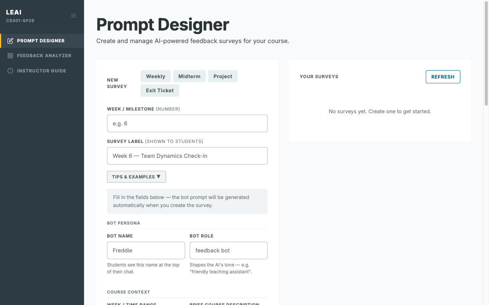
Survey Settings
Below the main prompt area is a Survey Settings panel. You can expand it by clicking the heading. These settings control how and when students can participate.
All LEAI surveys are anonymous. No name, email, or student ID is collected — sessions appear as "Anonymous Student 1, 2…" in the Feedback Analyzer.
Set a date range for when the survey is active. Students who visit before the open date, or after the expiry date, will see a polite message instead of the chat. Leave blank to use the default expiry of 14 days from creation.

Not sure about settings? Leave them at their defaults. You can always edit them later using the Edit button on the survey card.
Reading Status Badges
Each survey card in the right panel shows a colored badge telling you its current status at a glance.
- Open — students can access and submit responses right now
- Closed — you manually closed it; students see a "closed" message
- Expired — the expiry date has passed; no new responses accepted
- Scheduled — the open date is in the future; not yet visible to students
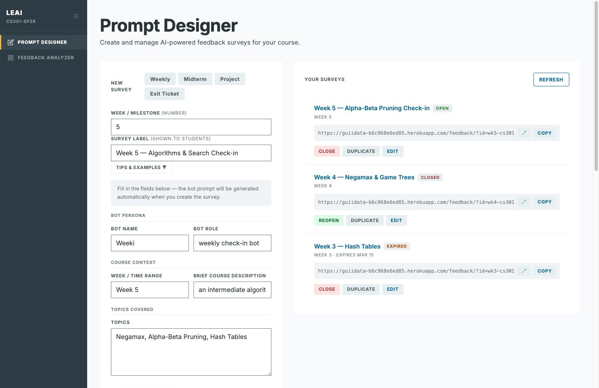
Closing & Reopening a Survey
You can manually close a survey at any time — for example, when a class session ends. You can also reopen it later.
Find the survey card and click the Close button. The badge will immediately change to Closed. Students who visit the link will see a message saying the survey is closed.

On a closed survey card, click the Reopen button. The survey becomes Open again, and the expiry date is automatically extended by 14 days from today.
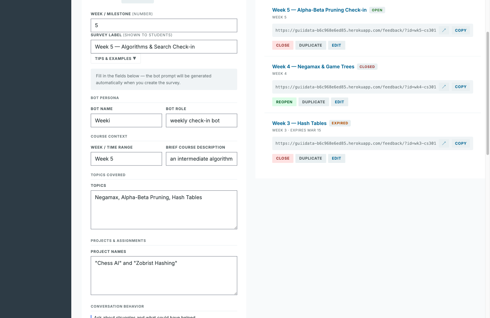
Editing a Survey
You can change a survey's label, week number, instructions, and date range after it has been created.
Click the Edit button on any survey card. A panel slides open with the current values already filled in.
Update any fields you want. You can change the label, instructions, week number, or date range.
Click the Save Changes button. The survey card updates immediately to reflect the new values.
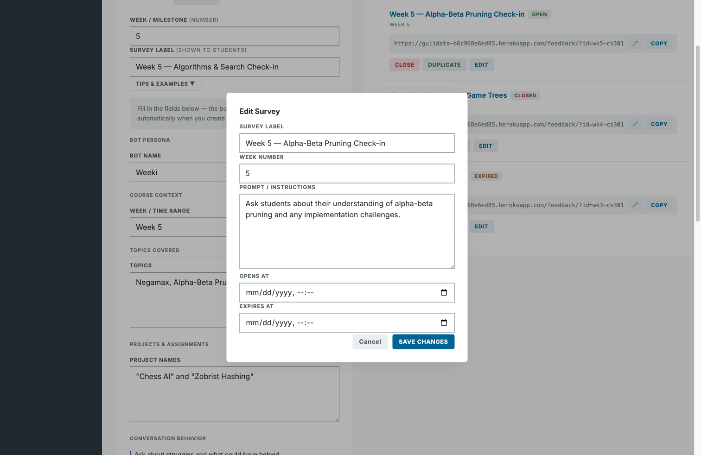
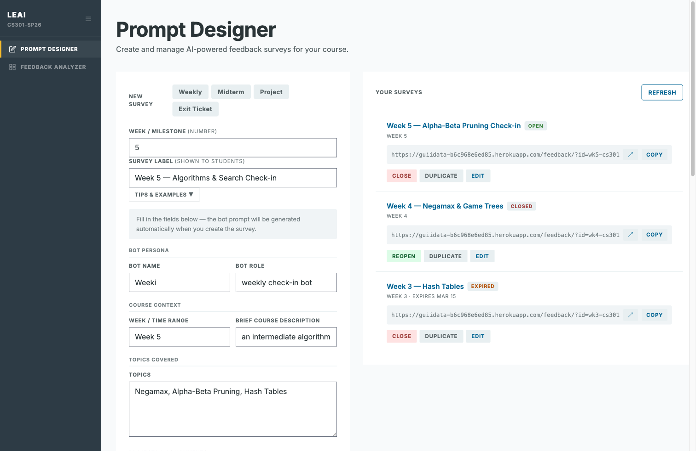
Duplicating a Survey
If you want to reuse a survey from a previous week, use the Duplicate button instead of retyping everything.
Click the Duplicate button on any survey card. A copy is created with the same prompt and settings, but a fresh link and Open status.
The new survey appears in the list. Use the Edit button to update its label, week number, or instructions before sharing the new link with students.
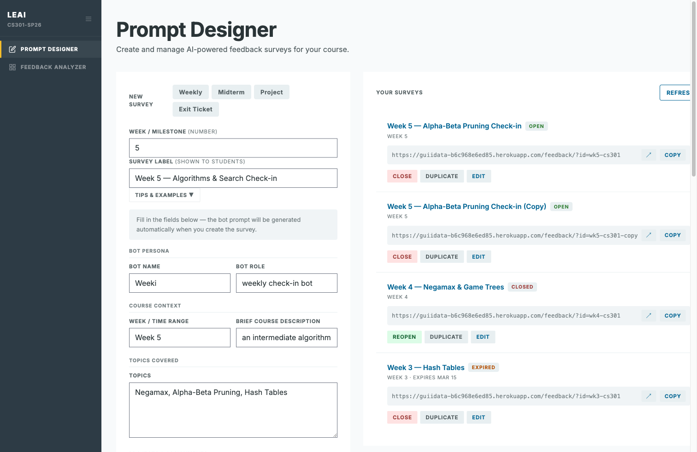
In-Group Feedback Mode
In-Group Feedback is a second mode inside the Prompt Designer, built for courses with group assignments or group projects. Instead of asking about the course overall, the bot asks each team how their own team is going — collaboration, workload, friction, what's working — so you can spot team issues early enough to step in.
It lives alongside General Course Feedback, not in place of it. You switch between the two with the tabs
at the top of the Prompt Designer. A green badge next to the page title (• IN-GROUP MODE)
is always visible in this mode so you know which world you're designing in.
Design values
- You never enter student names. You configure team counts and sizes only. Students pick their own team from a dropdown when they respond.
- Anonymous to you, always. Results are team-level. You see which team said what, never which student on that team said what.
- Teammates stay anonymous too. If a student flags a specific teammate, the bot refers to them as Teammate A, B, or C — never by a real name.
- Small-team warning. With 2 or fewer members, teammate-level comments can be traceable. The setup UI warns you if any team is that small.
Setting up your teams (once per course)
In Prompt Designer, click the In-Group Feedback tab at the top of the page. The tabs and active badge change to a forest-green accent so you can see at a glance which mode you're in.
Enter how many teams, default team size, and what label students see (Team / Group / Lab Group / Project Group). A grid of team-size inputs appears below, pre-filled with the default.
If one team has a different size (say Team 7 has 3 members instead of 4), change just that one input — it highlights so you can see at a glance which sizes are exceptions.
Click Save configuration. The setup form collapses to a summary row showing the count, average size, and a colored dot. This is your team configuration.
Multiple team configurations per course
Some courses re-group students mid-quarter — for example, lab teams for the first month, then project teams for the rest. You can keep both in the same course:
Click + Another on the summary row, or + New team configuration in the tab strip. A fresh setup form appears.
Give it a recognizable name like "Lab Teams" or "Final Project Teams" so you know which is which when you create a survey.
The first configuration is green, the second purple, then amber, teal, rose, indigo, brown, slate, then cycling back at the ninth. The color follows that configuration everywhere — the tab, the summary row, the survey builder banner, the student pre-chat screens, and the analyzer grid — so you always know which team set a survey is tied to.
When you click a team configuration sub-tab (e.g. Lab Teams), the entire In-Group surface follows: the Your Teams card, the survey builder's Creating a survey for: … banner, and the primary Create button all flip to that configuration's color. There's nothing else to click — switching sub-tabs is how you switch which teams the next survey targets.
Creating an in-group survey
Below the Your Teams card is the In-Group Survey builder. It looks similar to the general builder but asks a different set of questions.
If you have more than one configuration, a dropdown lets you choose which one applies. A colored banner at the top of the builder (Creating a survey for: Lab Teams) reminds you at all times which teams this survey targets.
Week number, survey label, bot name, what the team is currently working on (e.g. "Midterm Group Project — Game Prototype").
Pre-checked questions cover collaboration, workload fairness, what's working, and whether there's any concern worth flagging. Uncheck anything that doesn't fit.
Click Create Survey & Get Link. A shareable link appears. Send it to students through whichever channel you already use (Canvas announcement, email, Slack).
Managing your in-group surveys
The right-hand card in the In-Group tab, Your In-Group Surveys, lists every in-group survey you've created for this course. Each row mirrors what the General survey list gives you, and a small colored badge on the left shows which team configuration the survey targets — so at a glance you know whether a row belongs to your Lab Teams, Final Project Teams, or another grouping.
Click the arrow to open the survey in a new tab, or Copy to drop the link on your clipboard for sharing.
Close stops students from submitting new responses without deleting what they already said. Reopen whenever you want.
Duplicate clones the survey (and takes a fresh team snapshot from the current team configuration) so you can run the same check-in next week without retyping.
Edit opens a modal to update the shown-to-students label, week number, activity context, and open/expire dates. Prompt wording stays locked after creation — if you need a bigger rewrite, Duplicate first so past responses stay anchored to their original prompt.
Delete removes the survey, its team snapshot, all anonymous session assignments, and the stored conversation log. The shareable link stops working. Deletion is irreversible — the confirm dialog makes this explicit.
Export downloads every in-group survey for this course (plus its team snapshots and anonymous session assignments) as a single JSON file. Import reads such a file back. Duplicates (same survey id) are skipped on import. Useful for moving data between browsers or archiving a pilot.
What students see
- A short anonymity notice (one screen, one click) explaining that their feedback is team-level only and that teammates will be referred to as Teammate A, B, or C. The screen wears the same color as the team configuration the survey targets.
- A team picker — a dropdown listing the teams you configured. They pick their team and click Continue. A small I don’t see my team link gives them a safe escape if the roster doesn't match.
- The chat opens. A thin color strip at the top reads Configuration Name · Team N · Anonymous. The bot greets the student by team name ("You're sharing as a member of Team 3…") and asks the dynamics questions you configured.
- If the student flags someone specific, the bot assigns that person a letter ("I’ll refer to that person as Teammate A") and stays with the letter label for the rest of the conversation — you never see real teammate names in the conversation log.
Reading in-group results
Open Feedback Analyzer. In-group surveys appear as colored chips at the top of the page (above the regular scope bar). Each chip's color matches its team configuration, so you can see which lab/project teams you're looking at without reading the label.
The regular analyzer view collapses and a team grid appears. One card per team, top-bordered in the configuration's color, showing X of Y responded, a short auto-summary of common themes surfaced from student messages, and a View conversations button (disabled on teams with no responses).
Click View conversations on any team with responses. You see the anonymous conversations from that team — "Anonymous response 1, 2, 3…" — with the bot's turns and student's turns clearly labelled, and the bot's letter-label references (Teammate A, Teammate B) preserved. No student identities anywhere in the UI.
Click ← Back to General Analysis at the top of the in-group view to return to the regular dashboard. The regular scope chips and analysis sections come back unchanged.
When a student drops, joins, or switches teams
- A student drops. Edit the size for that team in the Your Teams card. Future surveys use the new size. Past surveys keep the sizes they were created with — a small footnote in the analyzer makes that clear.
- A student switches teams. You do nothing. Next time they open a survey link, they pick their new team in the dropdown.
- Restructuring teams mid-quarter. Add a second configuration ("Final Project Teams") instead of editing the existing one. Past surveys stay attached to the original configuration; new surveys target the new one.
Analyzing Feedback
The Feedback Analyzer is your central dashboard for understanding what students are saying. It offers three layers of analysis — each designed so you can go as shallow or as deep as you need:
- Traditional Analysis — deterministic word-frequency bars you can verify yourself (no AI involved)
- Instructor Insights — a one-click summary with citations so you can trace every claim back to a student response
- Feedback Chat — a full chat interface where you ask free-form questions about your data and the AI answers with evidence
Open the Feedback Analyzer from the sidebar (or navigate directly) and log in with your course ID and dashboard password — the same credentials you use for the Prompt Designer.
The Dashboard
After logging in you see the full dashboard for your course. It has four sections stacked top to bottom:
A row of buttons at the top: Entire Course plus one chip per weekly survey. Click any chip to filter everything on the page to that scope.
Cards showing: total Responses, Participation percentage, Avg Words per response, and a Responses / Week sparkline so you can spot drop-offs at a glance. A Nudged card joins them once the AI has pointed at least one student toward a person — see Student Responses.
Horizontal bar chart of the most frequent terms in student feedback. Toggle between Unigram, Bigram, and Trigram. Click any bar to see the exact responses that contain that term.
Below the bars you'll find the AI-generated summary (if you've triggered one) and the full list of student responses in collapsible cards.
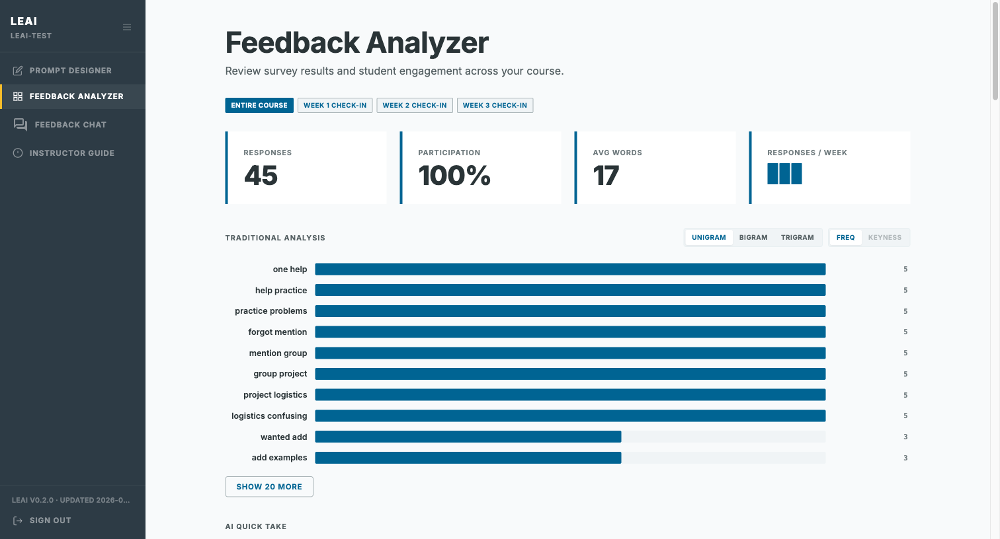
Filtering by Scope
The scope chips at the top of the dashboard control what data appears everywhere on the page — stats, n-gram bars, Instructor Insights, and response list all update instantly when you select a different scope.
- Entire Course — shows every student response across all weeks. The Keyness toggle is disabled because there is no reference subset to compare against.
- Week N — shows only responses from that week's survey. The Keyness toggle becomes active, letting you see which terms are statistically distinctive for that week compared to the full course.
Use scope to spot weekly shifts. Click through Week 1 → Week 2 → Week 3 and watch the n-gram bars change. Terms that appear only in later weeks often signal emerging issues worth addressing.
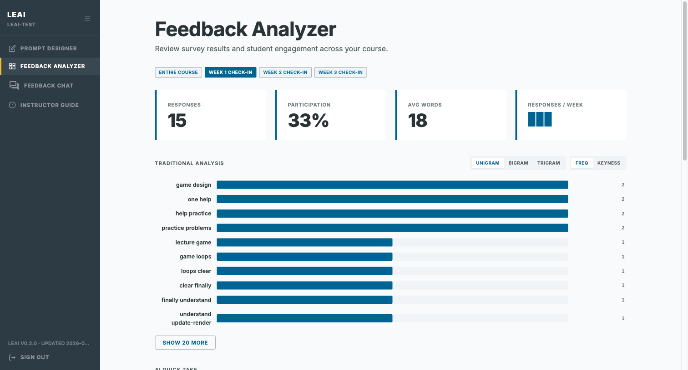
Traditional Analysis (N-grams)
The Traditional Analysis panel shows you what students are talking about using pure word-frequency counting — no AI is involved, so the results are completely deterministic and reproducible.
Three term-length modes:
- Unigram — single words (e.g. "game", "confusing", "help")
- Bigram — two-word pairs (e.g. "group project", "office hours") — the default view
- Trigram — three-word phrases (e.g. "too much group")
Two ranking modes:
- Freq — raw count: how many times the term appears
- Keyness — (only available when a weekly scope is selected) — ranks terms by how statistically over-represented they are in the selected week compared to the full course. Uses a log-likelihood formula. A high keyness score means the term is distinctively associated with that week's feedback.
Clicking a bar expands it to show every student response that contains that term, with the keyword highlighted in gold. Each match card shows a response ID (R1, R2, etc.) and the week label so you can cross-reference it with the full response list below.
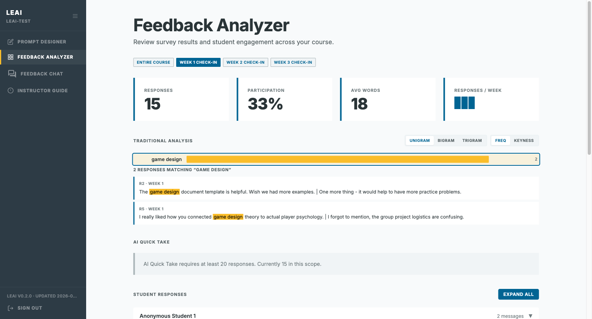

Common English words are filtered out. The n-gram analysis automatically removes stopwords like "the", "is", "and", "I", etc. so the bars show meaningful content words only.
Instructor Insights
Instructor Insights gives you a concise, citation-backed summary of the feedback in the current scope. Unlike the traditional analysis, this does use AI — but every claim includes numbered citations so you can verify it against the original student responses, and each claim shows how many students back it so a single voice is never dressed up as a class-wide theme.
The summary is generated on demand — it won't run automatically. You'll see a shimmer animation while the AI processes the responses (typically 10–20 seconds).
The AI returns a set of themed bullet points (typically eight to fifteen) covering recurring praise, concerns, and suggestions. Each bullet is a single claim, tinted by sentiment — green for positive, red for negative, amber for mixed — with a small sentiment legend above the list.
Every bullet carries a "N students" count. The AI cites every response that genuinely supports a claim, not just two or three examples, so the count reflects real weight — and two opposing bullets read as the two sides of a disagreement, sized by how many students are on each. Click the count to expand the underlying citation pills.
Points only a single student raised are split into their own group below the themes, flagged "individual signal, not yet a class-wide theme." They're kept rather than hidden — so a small class loses nothing — but a lone, vivid remark can no longer masquerade as a shared pattern. This is the safeguard against summaries over-generalising from one example.
Expanding a claim's count reveals its numbered citation pills. Click any pill to see the underlying student response in a popover — the quoted text, the student's week, and the R-id. The same pill number always points to the same source, so if [4] appears in two different bullets it refers to the same student.
Click the ▾ N sources toggle below the bullets to reveal a drawer with every cited response in order — each card shows [n] R-id · Week X followed by the response text. Clicking a pill briefly highlights its matching card so you can find it quickly.
Minimum 5 responses required; 20+ recommended. The summary will not generate below 5 responses. The "Mentioned by one student" group keeps a single voice from reading as a shared theme, but it can't manufacture consensus that isn't there — between 5 and 20 responses even the grouped themes rest on a thin sample, so treat low-N output as indicative, not conclusive. Switch to "Entire Course" scope if a single week doesn't meet the recommended threshold.
Pill numbers ([1] [2] [3] …) are local to each AI response and assigned in first-appearance order, like footnotes in a paper. They are not the same as R-ids. R-ids (R1, R2, R3 …) are the stable class-wise identifiers you'll see in the sources drawer and in the Student Responses section below — they let you trace a citation back to a specific student across the whole course.
The summary is cached on the server — once generated, it reloads instantly on future visits. A second AI pass quietly checks each citation against its source text and drops any it can't support, so the per-claim counts you see are conservative. Click Regenerate to create a fresh summary (for example, after new responses come in). Click Show prompt to see the exact instruction sent to the AI.

Student Responses
The Student Responses section appears at the bottom of the dashboard. Each student's feedback session is shown as a collapsible card labelled with an R-id — R1, R2, R3 … — the same identifiers Instructor Insights cites. R-ids are assigned class-wide and stay stable across scopes, so the R5 card here is the same R5 you'll see referenced in the Instructor Insights sources drawer.
Each card shows the R-id, the week, and a message count. This gives you a quick sense of participation before diving in.
Click any card to reveal that student's full messages. Each message is labelled STUDENT so the source is clear.
When an Instructor Insights bullet cites a source as R12, scroll to the R12 card here to read that student's full conversation. This is useful when you want to understand the context behind a specific data point in the AI summary.
Use the button at the top-right of the section to open every card at once for a full read-through.
Students the AI pointed toward a person
If you turned on Point to a human in Customizations, the AI can suggest — once per conversation, and only when a student says they are stuck, lost, behind, or not keeping up — that they bring it up with you or a TA. Those conversations are marked so you can find them:
A flag chip on the collapsed card. A legend above the list explains the icon. Both appear only once at least one student has been nudged, so nothing changes for courses that leave the setting off.
Expand the card and a small flag sits next to the one AI reply that made the suggestion, so you can read what the student said just before it.
Narrows the list to those conversations. Your choice is remembered between visits, so switch it back to All responses when you are done.
The chip records that the AI made the suggestion, not that it was right, and not whether the student acted on it. Read the conversation before drawing conclusions. Conversations from before this feature shipped carry no chip even if a student was pointed to a person at the time.
R-ids are anonymous by design — they identify a unique student session for cross-referencing, but they do not reveal who the student is. If your survey is configured as anonymous (the default for the Weekly Check-in template), the R-id is the only identifier shown anywhere in the dashboard.
Looking for a specific theme? Use your browser's Find (Cmd+F / Ctrl+F) while all cards are expanded to search across all student messages at once.
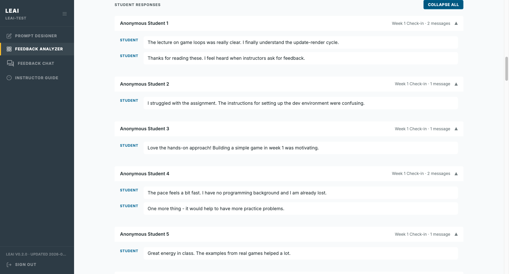
Feedback Chat
For deeper exploration, open the Feedback Chat page from the sidebar. This is a full chat workspace where you can ask free-form questions about your survey data and the AI responds with evidence-backed answers.
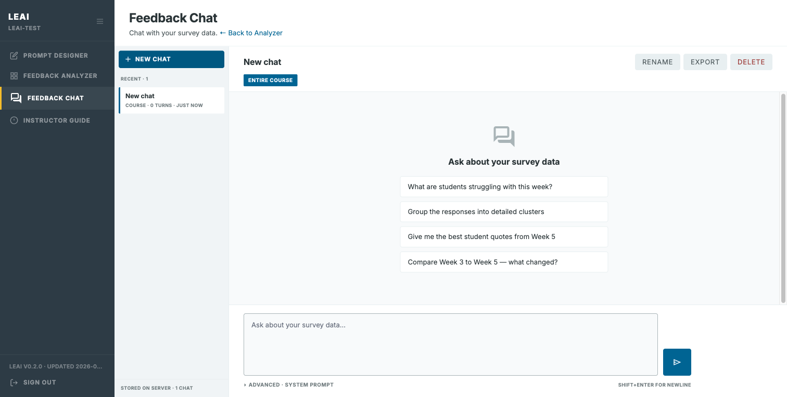
This creates a new chat session scoped to your entire course. Quick-prompt suggestions appear to help you get started — click one or type your own question.
Type a question like "What are students struggling with?" or "Group the responses into clusters" and press Enter. The AI reads all student responses in scope and answers with inline numbered citations.
Each AI answer uses the same citation format as Instructor Insights: numbered pills in first-appearance order and an expandable N sources drawer where each card shows [n] R-id · Week X. As in Instructor Insights, citations are verified against the source text behind the scenes and unsupported ones are dropped. Click a pill to read the source text.
Ask follow-up questions in the same session. The AI remembers the context from earlier messages, so you can drill deeper ("Tell me more about the grading complaints") without repeating yourself.
Sessions are persistent. Chat sessions are saved on the server and appear in the left sidebar. You can switch between sessions, rename them, export a session as Markdown, or delete sessions you no longer need. The session title is automatically generated from your first message.
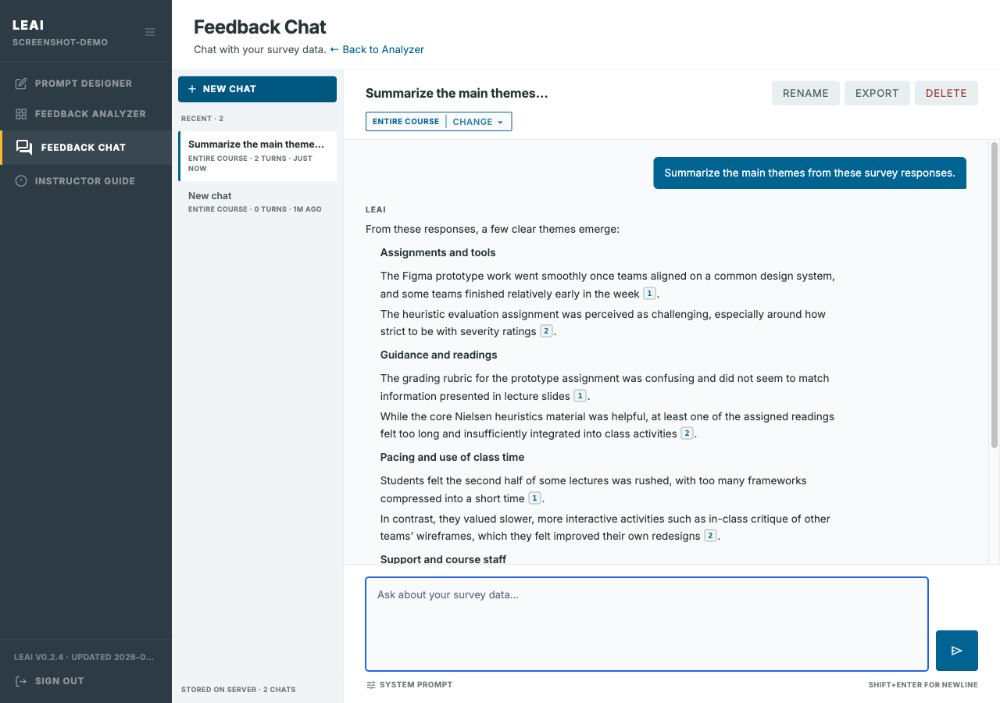
Use the "Ask a follow-up" link. After reviewing Instructor Insights, click Ask a follow-up → to open a new chat session with the summary pasted in as the first AI message — pills and the sources drawer all carry over. You can then ask follow-ups like "Tell me more about [4]" or "Which weeks do the grading complaints cluster in?" without re-pasting the analysis.
Bigger questions take longer. When you scope a chat to multiple surveys or ask a broad question across a full course, the AI has more student responses to read and cite. A shimmer placeholder appears under your message while it works — typically a few seconds for a single survey, up to a minute or two for the largest course-wide questions. You can leave the tab and come back; the answer is saved to the session as soon as it's ready. If something goes wrong on the server, the placeholder is replaced with a clear error message instead of leaving you waiting indefinitely.
Customising the AI Prompt
The Feedback Chat gives you full control over the AI's behaviour. Click the System Prompt button below the text input to open the prompt editor.
Click the small System Prompt button beneath the message input. A popup appears with the current system prompt in an editable text field.
Change the instructions to focus the AI on a specific area — for example, add "Focus only on responses related to grading" or "Respond in bullet points only." Changes apply to future messages in this session.
Click Restore default in the popup to reset to the standard LEAI prompt at any time.
Click Replay last turn to re-send your last question with the updated prompt. This lets you quickly compare how different prompts change the AI's response.
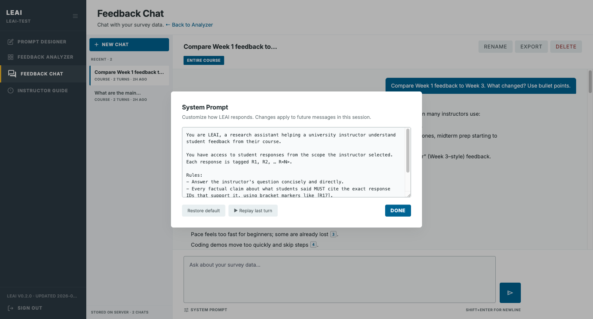
Prompt changes are per-session. Each chat session stores its own system prompt override. Creating a new session always starts with the default prompt. This means you can experiment freely without affecting other sessions.
What Students See
When you share a survey link with students, they land on a simple chat page. Understanding what they see helps you explain the activity and troubleshoot issues.
The Chat Interface
The student sees a minimal chat window. The AI opens with a greeting question based on your prompt. Students type their response and press Send. The conversation continues naturally for a few turns.
The header of the chat page makes the anonymity guarantee visible at all times: a green ANONYMOUS badge sits next to the survey title, and the subtitle reads "Your responses are anonymous." Two small buttons — Terms and Privacy — in the top-right let students open the legal documents in a new tab at any point during the session.
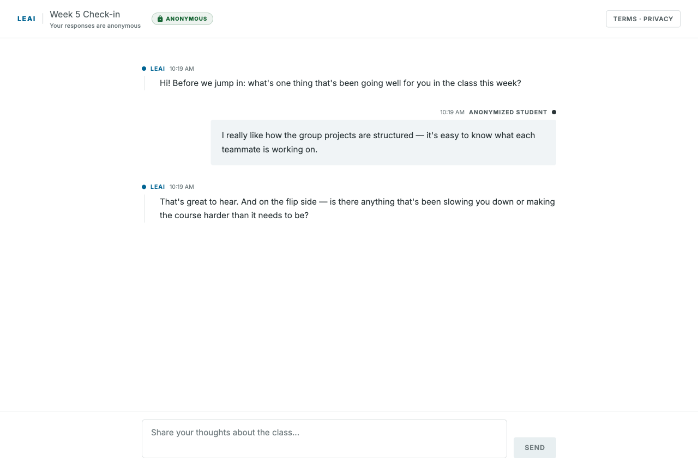
How Completion Certificates Work
If you offer completion credit, students download a PDF from their LEAI conversation and submit it where you tell them to. The PDF has one verification code. Your job is simply to check that code for the matching survey.
Use the submission process you already use for your course. The certificate contains a code; it does not contain the student's LEAI answers or identity.
Expand Verify completion certificates. If a week has more than one survey, choose the exact survey before checking codes.
Valid means LEAI issued that certificate for this survey. Not Found means the code does not belong to the selected survey. You can check several codes at once.
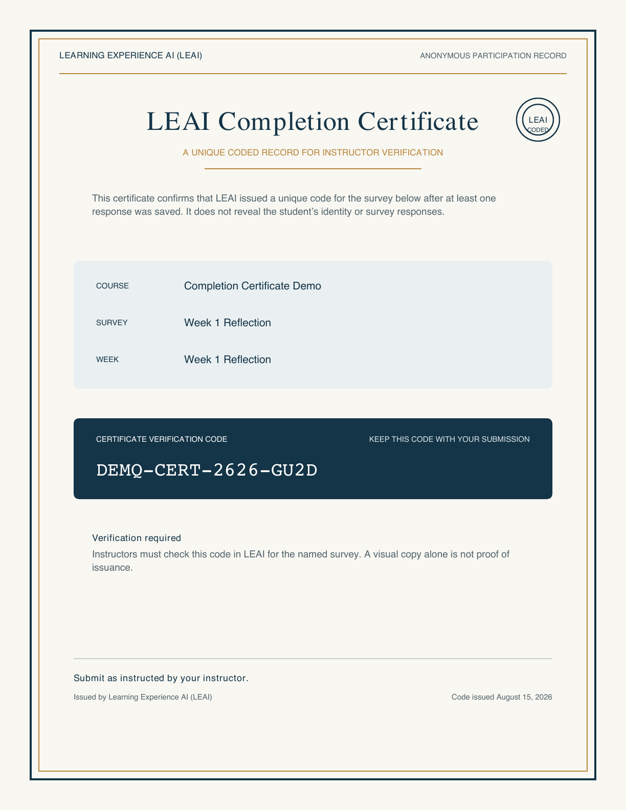
1 Find this code on the PDF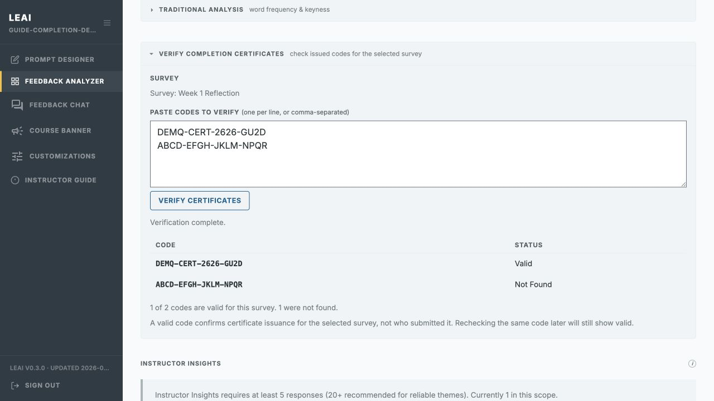
2 Paste one or more codes 3 Read the status hereA valid result confirms that LEAI issued a certificate after saving at least one response. It does not identify the student, reveal their responses, prove every section was completed, or show which anonymous conversation produced the code. You can recheck a code later; verification does not consume it.
Consent & Anonymity Notice
The first time a student opens a feedback link in a browser session, they are shown a small consent dialog before the chat begins. This is how LEAI records informed consent in a way that meets industry best practice for a research-adjacent tool — without being scary or bureaucratic.

What the dialog says, in plain terms:
- LEAI is an anonymous mid-course feedback tool. It does not ask for a name, email, student ID, or login. It uses random technical codes to keep a conversation together and, when enabled, issue a completion certificate.
- The purpose is to help improve the course while it's still running, not to wait for end-of-quarter evaluations when it is too late to help current students.
- Instructors cannot use LEAI to connect a response to a named student. If the course offers completion credit, students can submit a certificate through Canvas without exposing their LEAI responses; the course's stated grading policy still applies.
- There are two checkboxes. The first (required) records agreement to the Terms of Use and Privacy Policy — the document names are inline links that open the full text in a new browser tab. The second (optional) records research consent for that session: it is persisted to the backend as a per-message flag, so any future GUII Lab research analysis can be restricted to messages where the student opted in.
The Terms of Use and the Privacy Policy live as their own standalone pages (LEAI/legal/terms.html and LEAI/legal/privacy.html). The canonical source of each document is the corresponding Word file (LEAI-Terms-of-Use.docx and LEAI-Privacy-Policy.docx) in the same folder — edit those when the policy needs to change. After editing, run LEAI/legal/scripts/regenerate-md-from-docx.sh to refresh the matching terms.md / privacy.md files that the live HTML pages render. The edits then appear on the hosted pages with no code change.
The consent dialog appears once per browser session. If a student refreshes the page or follows a new survey link in the same tab, the dialog is skipped. Closing the tab and returning later is treated as a fresh session, so the dialog reappears — and the research consent checkbox resets, by design, so the student can freshly choose each time.
The Terms and Privacy buttons in the top-right of the header open the respective documents in a new browser tab at any point during the conversation. The full text of each document is a real page — students (and instructors) can bookmark it, share it, or even print it.
What If a Student Opens the Wrong Link?
If a student navigates to the feedback page without a valid survey link (for example, if they bookmark the base URL instead of the survey-specific link), they will see a clear message rather than a broken or blank page.

What Happens When a Survey Is Closed or Expired
If a student tries to access a survey that is no longer active, they will see a clear message explaining why — they won't just get an error.

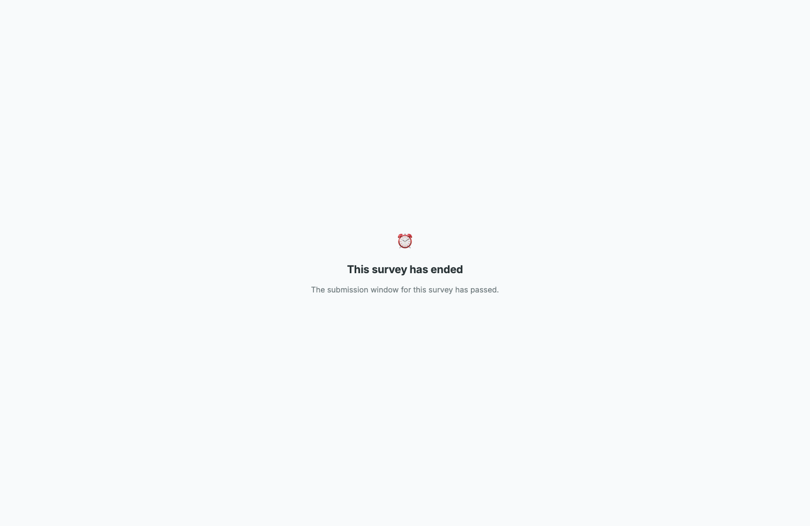
Students got a "closed" screen but the survey should be open? Go to the Prompt Designer, find the survey, and check the Opens At and Expires At dates. If the expiry date is in the past, click Reopen to reset it.
Importing PDF Reflections
Individual Structured Reflection only. Team/In-Group PDF upload is not supported.
Use this workflow when students submit the individual reflection as a PDF in Canvas. Known template instructions, submission guidelines, and raw conversation transcripts are removed automatically before review.
Canvas to Feedback Analyzer
- Download the students' text-based PDF submissions from the Canvas assignment. Keep filenames that identify the student.
- In Feedback Analyzer, select Structured Reflection and the exact grading week. Open Upload PDF reflections, add the batch, and resolve only the attribution issues.
- Resolve every file under Needs attention. Clean files stay collapsed and are available if you want to spot-check one.
- At the final check, confirm the destination, response count, student count, skipped files, and any re-upload decisions. Commit, then verify the newest row under Recent PDF uploads.

Needs attention tells you what to do: supply or explicitly omit a missing answer, inspect and accept or edit an unusually long answer, or remove other PDF content before continuing.


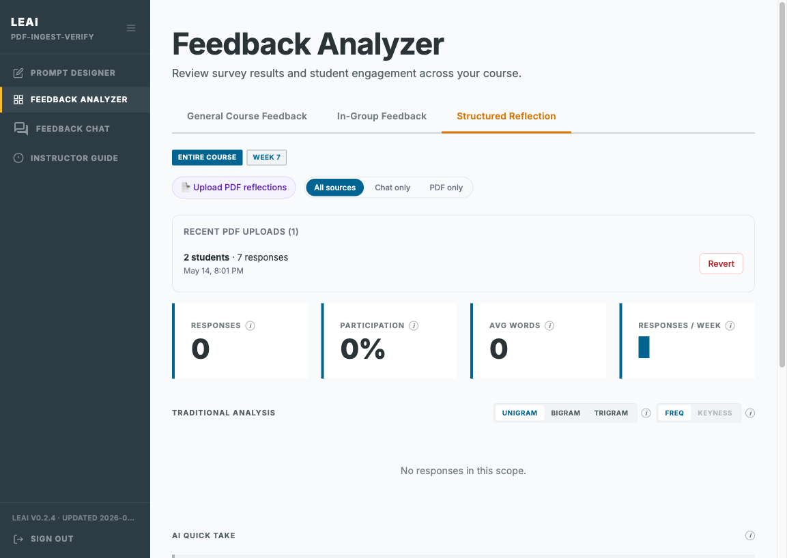
If something goes wrong or you are re-uploading
- Unreadable PDF: re-export it from Word or Pages as a text-based PDF. Scanned images and password-protected PDFs cannot be read.
- Large batch: the limit is 60 PDFs, 10 MB per file, and 50 MB total.
- Re-upload: Keep existing is always selected first. Choose Add or Replace only for that student when needed.
- Wrong week or wrong batch: open Recent PDF uploads, choose Revert, and confirm the named batch and counts. The audit manifest remains after the responses are removed.
- Interrupted review: typed corrections auto-save for seven days. The original PDF file is not retained; only committed answers are stored.
- Bulk fill: use the collapsed bulk-fill tool only when the same intentionally shared text belongs in several empty sections. It never overwrites existing text.
Common Questions
Glossary
| Term | Plain-language definition |
|---|---|
| Survey | An AI-powered feedback session you create and share with students |
| Prompt | The instructions you write telling the AI what topic to discuss with students |
| Turn | One student message plus one AI reply = one turn |
| Session | One student's complete conversation with the AI on a particular survey |
| Response | A student who submitted at least one message (counted once per survey) |
| AI Analysis | An AI-generated summary of themes and friction points from student conversations, available in the Survey Detail view |
| CSV | A spreadsheet file format that opens in Excel, Google Sheets, or Numbers |
| Course ID | A short code identifying your course, used to log in to both LEAI tools |